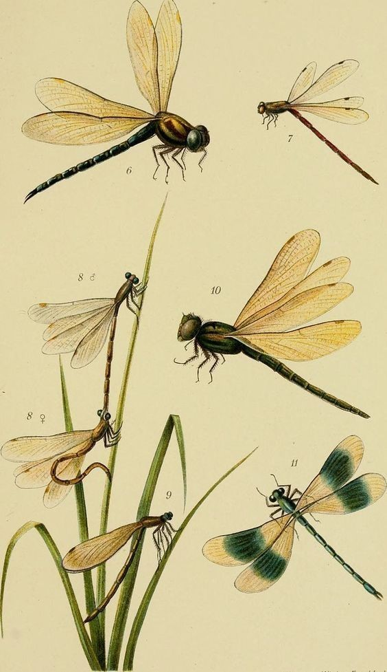

En las últimas décadas desapareció un 75% de los insectos del mundo, y a cada año sigue aumentando el número. Esto no es un motivo de festejo, sino de alarma. Nuestro planeta y quienes lo habitan necesitan de estos pequeños vecinos para mantener el equilibrio del ecosistema.
¿Sabías que no podríamos sobrevivir sin los insectos? Ellos cumplen funciones vitales, como la polinización de los cultivos, la descomposición de la materia orgánica e incluso el control de las plagas. Esto quiere decir que son fundamentales para la producción de alimentos, una necesidad básica de todos los seres vivos.
La intervención humana en la naturaleza causó muchos estragos que nos llevaron a las principales causas por las que desaparecen estos bichitos: el cambio climático, la polución, los pesticidas, la agricultura industrial, la deforestación, la contaminación lumínica y la pérdida de hábitats. Necesitamos urgentemente restaurar nuestro planeta y volverlo habitable, tanto para nosotrxs como para aquellos con los que convivimos.
La naturaleza es sabia y mantiene un orden y equilibrio entre todos los seres. En algún momento de la historia dejamos de respetarla e impusimos nuestras propias reglas humanas sobre el mundo natural. No podemos permitir que los insectos, ni los animales , ni las plantas, se sigan extinguiendo. Este es un llamado de alerta, para recordar que todavía estamos a tiempo de cambiar las cosas y es hora de actuar en conjunto por nuestro hogar.
¿Cómo podemos ayudar? Desde nuestro lugar, cambiando ciertos hábitos en nuestro estilo de vida podemos generar un gran impacto.
Algunas ideas sencillas para incorporar son:
Este aporte, por más chiquito que parezca, puede ayudar mucho a los bichitos a tener un entorno más amigable en el que las distintas especies puedan sobrevivir y restablecer el equilibrio de la naturaleza.